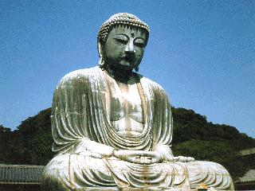

BUDDHIST PHILOSOPHY
TENTATIVE COURSE SCHEDULE
SPRING 2024

2-05 PRACTICAL MATTERS/OVERVIEW
2-07 Indian Buddhism (ITBP--19-43 & Blackwell Article)
2-09 Indian Buddhism (ITBP--19-43 & Blackwell Article)
2-12 The Life of the Buddha (ITBP--1-18 & Carrithers Handout)
2-14 The Buddha--PBS Video
2-16 The Buddha--PBS Video
2-19 The Life of the Buddha--BBC Documentary
2-21 Path to Enlightenment--Video--Key Events & Their Significance
2-23 What is Buddhism? Philosophy, Religion, etc. & Their Significance
2-26 The Dharma--Basic Teachings (ITBP--45-80)--P
2-28 Kamma, Samsara, and Rebirth (ITBP—83-104)--P
3-01 Interdependent Arising (ITBP—105-124)--P
3-04 Impermanence, no-enduring-self, and emptiness (ITBP--125-148)--P
3-06 Moksa & Nibbanna (ITBP--149-174)--P
3-08 NO CLASS--ASDP NATIONAL CONFERENCE!
3-11 Theravada--Dhammapada (On line)--P
3-13 King Milinda’s Questions (On-line)--P
3-15 King Milinda’s Questions (On-line)--P
3-18 Mahayana View--Heart Sutra & Diamond Sutra (On-line)--P
3-20 Heart Sutra & Diamond Sutra (On-line)--P
3-22 Schools of Buddhism--Madhyamaka, Yogacara, Tantra--Abhidharma--MIDTERM PAPER DUE--P
3-25 SPRING BREAK--NO CLASS!
3-27 SPRING BREAK--NO CLASS!
3-29 SPRING BREAK/EASTER BREAK--NO CLASS!
4-01 EASTER BREAK--NO CLASS!
4-03 MIDTERM PAPERS DISCUSSION/PRESENTATIONS
4-05 MIDTERM PAPERS DISCUSSION/PRESENTATIONS
4-08 MIDTERM PAPERS DISCUSSION/PRESENTATIONS
4-10 Chinese Buddhism (ITBP--175-206)
4-12 Chinese Buddhism (ITBP--175-206)
4-15 The Zen Teachings of Bodhidharma (On-line)--P
4-17 The Zen Teachings of Bodhidharma (On-line)--P
4-19 The Zen Teachings of Bodhidharma (On-line)--P
4-22 The Sutra of Huineng (On-line)--P
4-24 The Sutra of Huineng (On-line)--P
4-26 The Sutra of Huineng (On-line)--P
4-29 Japanese Buddhism (ITBP—207-228)--P
5-01 Zen Flesh, Zen Bones--P
5-03 Zen Flesh, Zen Bones--P
5-06 Zen Flesh, Zen Bones--P
5-08 Contemporary Buddhism (ITBP--247-263)
5-10 Thich Nhat Hanh--The Miracle of Mindfulness--P
5-13 The Miracle of Mindfulness--P
5-15 The Miracle of Mindfulness
5-17 Tibetan Buddhism & The Dalai Lama--Mind & Life Institute
5-20 Study Day--FINAL PAPER DUE
5-?? NO CLASS FOR MUSEUM VISIT???